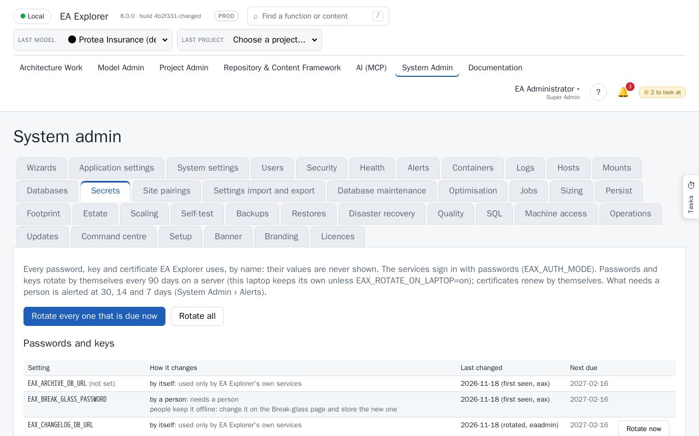

Put in your organisation's certificate
For: System Admin
Replace the self-made certificate with your organisation's, so browsers trust EA Explorer without a warning.

#/admin/secretsWhy do this
Browsers trust the site when it presents a certificate from an authority they know. Putting in your organisation's certificate removes warnings and is usually required by security policy.
Security in EA Explorer is a set of layers: who can reach it, how they prove who they are, what their roles allow, and secrets no one can read. Each layer is set on the screens, and nothing here ever shows a secret's value.
In TOGAF terms: Outside the method: this protects the repository and who reaches it. See EA Explorer and the TOGAF Standard.
The goal: People see your organisation's certificate when they open EA Explorer.
Before you start You need the Super Admin or IT Admin role, and a certificate covering the name people open (for example ea.example.org), reports. and docs. before it, with its private key (no password) and the chain.
Steps
- Open System Admin › Running › Secrets, Front door certificate.
- Upload the certificate, the chain and the key. It is checked first: the names it covers, its dates, that the key matches, that the chain is complete.
- It is used at once, with no restart and nobody signed out. The one before is kept to undo.
On the machine: eax certs front install --cert <certificate file> --key <key file> [--chain <chain file>]; eax certs front shows the one in use; eax certs front undo puts the one before back.
Check it worked
Open EA Explorer in a browser: the padlock shows your organisation's certificate, with no warning.
If something goes wrong
- Refused: the message says why (a name it does not cover, a key that does not match, a missing chain).
- Expiry: alerts come 30 days before it ends and on the day.
Related
- Install and run: Real certificates, where you give your file names and get the commands filled in.